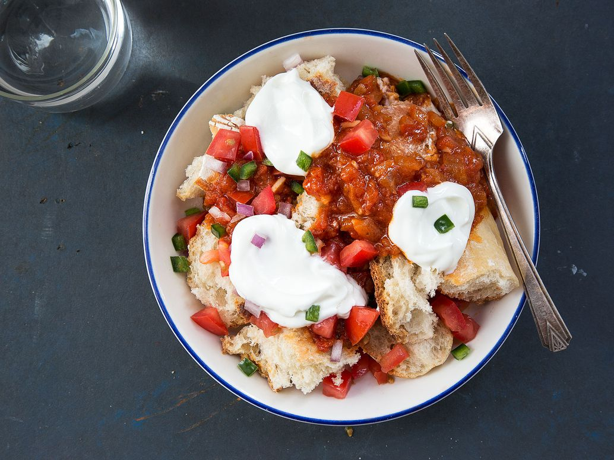

In the Horn of Africa, they serve a version of panzanella tossed not with fresh tomatoes, but with a rich, spicy tomato stew.
Ingredients
Directions
Heat oil in a 4-qt. saucepan over medium-high. Add half the onion and the garlic; cook until soft, 4-5
minutes.
Add minced tomatoes, paprika, cayenne, allspice, salt, pepper, and 2⁄3 cup water; cook, uncovered, until
tomatoes break down, 12 minutes.
To serve, divide bread between 2 bowls; top with sauce and garnish with remaining onion and tomato, plus the
jalapeño and yogurt.
Crusty bread soaks up the juices and cooling yogurt provides contrast and sweet relief.
Serves two.
This recipe is excerpted from Cheryl Rule's cookbook, Yogurt Culture: A Global Look at How to Make, Bake, Sip, and Chill the World's Creamiest, Healthiest Food (Houghton Mifflin, 2015).